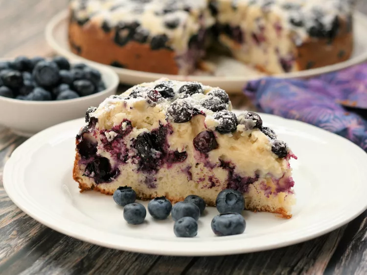

Blueberry Cake

Description
This sweet, colorful lemon blueberry cake recipe is bursting with fruity flavor.
Ingredients
- Butter and flour
- Berries
- Lemon
- Sugars
- Eggs
- Sour cream
- Oil
- Vanilla and Salt
- Flour
- Baking powder
Steps
- Toss the berries in flour and lemon juice.
- Make the batter.
- Pour half of the batter into the prepared pan, then top with half of the blueberry mixture.
- Pour the remaining batter over the berries, then finish with the remaining berry mixture.
- Bake in the preheated oven until a toothpick comes out clean.
- Dust the cooled cake with confectioners’ sugar.